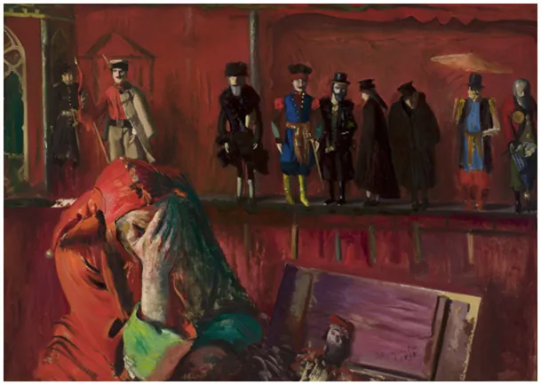
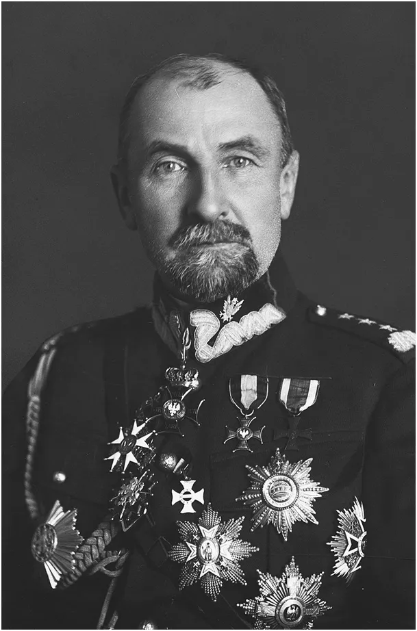

15 sierpnia trzeba podkreślić, że Piłsudski nie brał udziału w Bitwie Warszawskiej, był na imprezie w Puławach!
Puławach! Bitwę Warszawską wygrał gen. Tadeusz Rozwadowski.
Tkwienie w kłamstwie to największy problem naszego narodu już od setek lat. Oddając cześć fałszywym bohaterom, Polacy stawiają pomniki swym katom. Bez faktycznej oceny sytuacji trudno w walce z wrogiem wymierzać prawidłowe ciosy. Od 30 lat Polacy okładają się nawzajem na froncie PO - PiS, gdy ukryta w cieniu polityków prawdziwa elita podsycając ten fałszywy spór drąży nasze kieszenie. Miliony naszych rodaków widziało jak marszałek Piłsudski prowadził polską armię... Jest jeden problem, oni widzieli to w kinie, o którym dokładnie w tamtym czasie Lenin mówił, że jest najważniejszą ze sztuk.
Rozwadowski po wybuchu zamachu majowego, stanął na czele legalnych sił rządowych przeciwko dokonującym puczu piłsudczykom.

Po dymisji prezydenta Stanisława Wojciechowskiego i zawieszeniu broni, Tadeusz Rozwadowski wraz z grupą oficerów dowodzących siłami rządowymi został aresztowany i uwięziony. Był przetrzymywany w celi o złych warunkach egzystencji. Władze sanacyjne miesiącami zwlekały z przedstawieniem mu aktu oskarżenia. W październiku 1926 roku w orzeczeniu Wojskowy Sąd Okręgowy stwierdził, że wobec braku dowodów nie ma powodu utrzymywania aresztu śledczego nad Tadeuszem Rozwadowskim, lecz w wyniku interwencji Józefa Piłsudskiego generał Rozwadowski nie wyszedł na wolność. W prasie piłsudczykowskiej została zorganizowana kampania atakująca Tadeusza Rozwadowskiego.
Z dniem 30 kwietnia 1927 roku generał Tadeusz Rozwadowski został przeniesiony w stan spoczynku. W obliczu nasilającej się w społeczeństwie akcji petycyjnej w obronie uwięzionych oficerów, 18 maja 1927 roku Tadeusz Rozwadowski został uwolniony. Ówczesne władze sanacyjne dokonały przy tym licznych uchybień prawnych. Władze uporczywie przesuwały termin rozprawy przeciw generałowi Rozwadowskiemu. Więzienie spowodowało, że Tadeusz Rozwadowski istotnie podupadł na zdrowiu. Zmarł w Warszawie 18 października 1928.
Często za powód śmiertelnej choroby Rozwadowskiego podaje się zatrucie toksynami w celi. To stara praktyka zbrodniarzy, malowanie celi opozycjonistów zatrutą farbą.
Grafika: "Stańczyk", Leon Wyczółkowski, 1898. Piękny obraz z nieznanych powodów powszechnie nieznany.
Za wiki https://pl.wikipedia.org/wiki/Tadeusz_Rozwadowski
Paweł Klimczewski